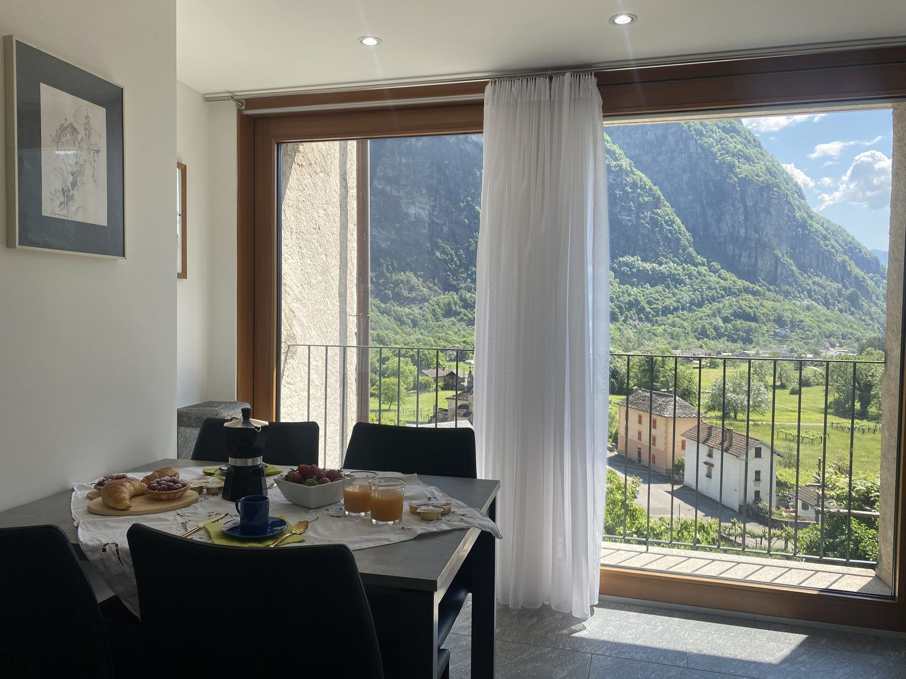

Cevio · Valle Maggia
Casa Lele – Sole
Al primo piano. Muri spessi in granito e pavimenti in legno: il più grande dei due, con una camera, un divano letto in soggiorno e posto per quattro.
- Superficie57,8 m², 1 camera
- Letti1 letto matrimoniale, 1 divano letto
- Bagno1 bagno con doccia
- CucinaCompletamente attrezzata, piano a induzione, lavastoviglie
- RiscaldamentoRiscaldamento a pavimento
- EsternoBalcone panoramico sulla valle
da CHF 140 / notte più pulizia finale CHF 140 e tassa di soggiorno CHF 2 per persona e notte
Guarda e prenota →